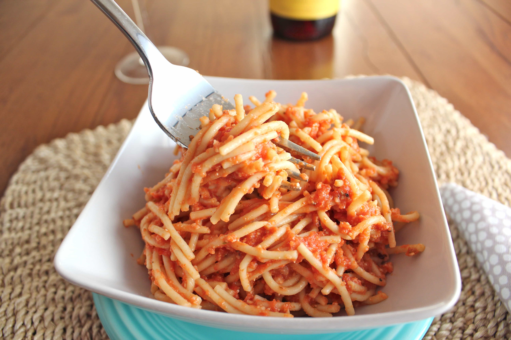

Spaghetti with vodka sauce is a comforting pasta dish coated in a silky, pink-hued blend of tomatoes, heavy cream, and a splash of vodka. The alcohol in the Penne alla Vodka style sauce helps emulsify the cream and tomatoes while cooking down completely, leaving behind a rich flavor balanced with garlic, onions, and red pepper flakes. Though often paired with short tubes, tossing long strands of spaghetti into the warm sauce with a splash of starchy pasta water creates a glossy, cheese-topped meal you can easily replicate using guides like A Cozy Kitchen.
